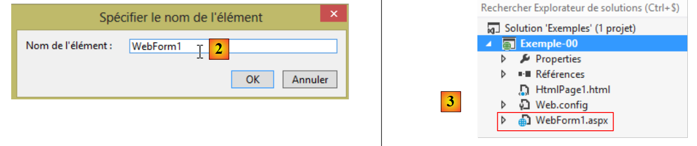
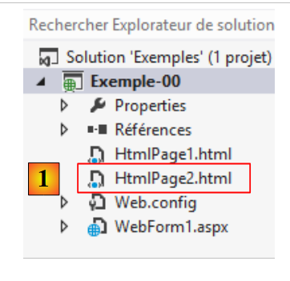
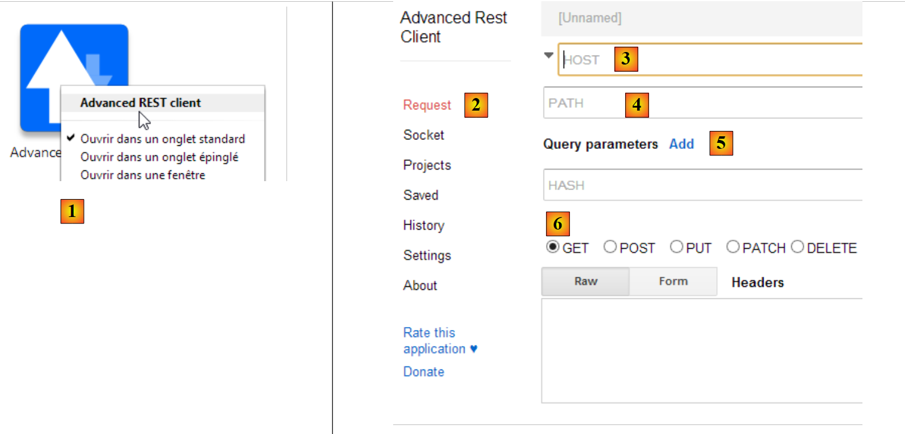
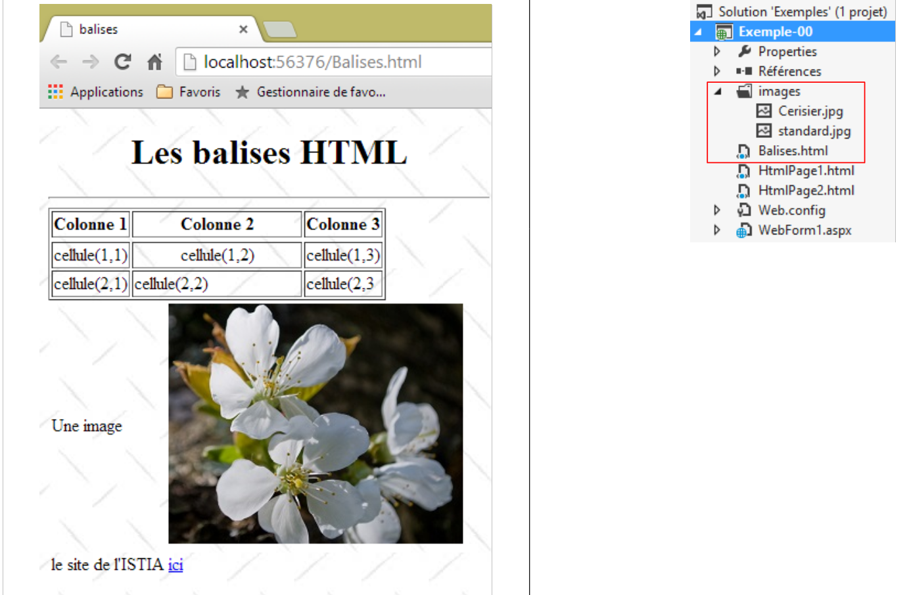
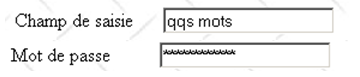
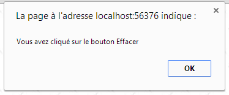
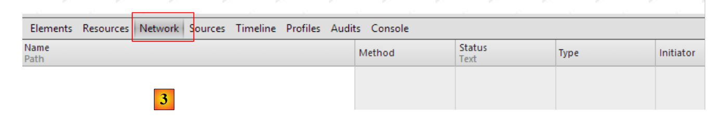
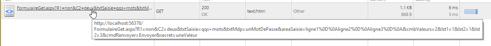

2. مبانی برنامهنویسی وب
هدف اصلی این فصل معرفی اصول کلیدی برنامهنویسی وب است که از فناوری خاص مورد استفاده برای پیادهسازی آنها مستقل هستند. این فصل نمونههای متعددی را ارائه میدهد که به شما توصیه میشود آنها را امتحان کنید تا به تدریج با فلسفه توسعه وب آشنا شوید. خوانندگانی که از قبل این دانش را دارند میتوانند مستقیماً به فصل بعدی بروند.
اجزای یک برنامه وب به شرح زیر است:

شماره | نقش | مثالهای رایج |
۱ | OS سرور | یونیکس، لینوکس، ویندوز |
۲ | سرور وب | اپاچی (یونیکس، لینوکس، ویندوز) IIS (ویندوز و پلتفرم داتنت NET) Node.js (یونیکس، لینوکس، ویندوز) |
۳ | کد سمت سرور. این میتواند توسط ماژولهای سرور یا برنامههای خارجی سرور (CGI) اجرا شود. | JAVASCRIPT (Node.js) PHP (اپاچی، IIS) JAVA (Tomcat, WebSphere, JBoss, WebLogic, ...) C#، VB.NET (IIS) |
۴ | پایگاه داده – این ممکن است روی همان دستگاهی باشد که برنامه از آن استفاده میکند، یا روی دستگاه دیگری از طریق اینترنت. | Oracle (Linux, Windows) MySQL (لینوکس، ویندوز) Postgres (لینوکس، ویندوز) SQL Server (ویندوز) |
۵ | OS Client | یونیکس، لینوکس، ویندوز |
۶ | مرورگر وب | کروم، اینترنت اکسپلورر، فایرفاکس، اپرا، سافاری، ... |
۷ | اسکریپتهایی که در سمت کلاینت و درون مرورگر اجرا میشوند. این اسکریپتها به هارددیسکهای ماشین کلاینت دسترسی ندارند. | جاوااسکریپت (تمام مرورگرها) |
2.1. تبادل داده در یک برنامه وب با استفاده از فرم

شماره | نقش |
۱ | مرورگر برای اولین بار یک URL را درخواست میکند: (http://machine/url). هیچ پارامتری ارسال نمیشود. |
۲ | وبسرور صفحه وب مربوط به این URL را برای آن ارسال میکند. ممکن است ایستا باشد یا بهصورت پویا توسط یک اسکریپت سمت سرور (SA) تولید شده باشد که ممکن است از محتوای پایگاههای داده (SB, SC) استفاده کرده باشد. در اینجا، اسکریپت تشخیص میدهد که URL بدون هیچ پارامتری فراخوانی شده و صفحه وب اولیه را تولید میکند. مرورگر صفحه را دریافت کرده و آن را نمایش میدهد (CA). اسکریپتهای سمت مرورگر (CB) ممکن است صفحه اولیه ارسالشده توسط سرور را تغییر داده باشند. در ادامه، از طریق تعاملات بین کاربر (CD) و اسکریپتها (CB)، صفحه وب اصلاح خواهد شد. به طور خاص، فرمها پر خواهند شد. |
۳ | کاربر دادههای فرم را ارسال میکند که سپس باید به سرور وب ارسال شود. مرورگر دوباره صفحهٔ اولیهٔ URL را درخواست میکند، یا در صورت لزوم صفحهٔ دیگری را، و همزمان مقادیر فرم را به سرور ارسال میکند. برای این کار میتواند از دو روش به نامهای GET و POST استفاده کند. پس از دریافت درخواست کلاینت، سرور اسکریپت (SA) مرتبط با URL درخواستی را اجرا میکند که پارامترها را تشخیص داده و آنها را پردازش خواهد کرد. |
۴ | سرور صفحه وب تولیدشده توسط برنامه (SA, SB, SC) را تحویل میدهد. این مرحله دقیقاً مشابه مرحلهٔ ۲ فوق است. اکنون دادهها مطابق مراحل ۲ و ۳ مبادله میشوند. |
2.2. صفحات وب ایستا، صفحات وب پویا
یک صفحهٔ ایستا با یک فایل HTML نمایش داده میشود. یک صفحهٔ پویا، صفحهای HTML است که بهصورت «آنلاین» توسط وبسرور تولید میشود.
2.2.1. صفحهٔ ایستا HTML (زبان نشانهگذاری HyperText)
بیایید اولین پروژه وب خود را با استفاده از ویژوال استودیو اکسپرس ۲۰۱۲ بسازیم. ما از گزینه [Fichier / Nouveau projet] استفاده خواهیم کرد:
 |
- در [1]، مشخص میکنیم که میخواهیم یک برنامه ASP.NET خالی بسازیم؛
- در [2]، نام راهحل ویژوال استودیو است. تمام مثالهای این سند در یک راهحل واحد خواهند بود؛
- در [3]، پوشهٔ والد پروژهای که قرار است ایجاد شود؛
- در [4]، نام پروژه.
روی «OK» کلیک کنید.
 |
پروژهٔ حاصل در [5] نشان داده شده است. از آن برای تشریح اصول اصلی برنامهنویسی وب استفاده خواهیم کرد.
بیایید با ایجاد یک صفحهٔ ایستا HTML شروع کنیم:
 |
- در [1]، روی پروژه کلیک راست کرده و گزینهها را دنبال کنید؛
 |
- در [2]، برای صفحه یک نام انتخاب کنید؛
- در [3]، صفحه اضافه شده است.
محتوای صفحهٔ ایجادشده به شرح زیر است:
<!DOCTYPE html>
<html xmlns="http://www.w3.org/1999/xhtml">
<head>
<meta http-equiv="Content-Type" content="text/html; charset=utf-8"/>
<title></title>
</head>
<body>
</body>
</html>
- خطوط ۲–۱۰: کد در تگ ریشه <html> قرار گرفته است؛
- خطوط ۳–۶: تگ <head> محدودهای را که بهعنوان سربرگ صفحه شناخته میشود، مشخص میکند؛
- خطوط ۷–۹: تگ <body> محدودهای را که به آن بدنهٔ صفحه گفته میشود، مشخص میکند.
بیایید این کد را به صورت زیر تغییر دهیم:
<!DOCTYPE html>
<html xmlns="http://www.w3.org/1999/xhtml">
<head>
<meta http-equiv="Content-Type" content="text/html; charset=utf-8" />
<title>essai 1 : une page statique</title>
</head>
<body>
<h1>Une page statique...</h1>
</body>
</html>
- خط ۵: عنوان صفحه را تعریف میکند – این عنوان در پنجره مرورگر نمایش داده میشود؛
- خط ۸: متن با قلم درشت ().
بیایید این صفحه را در یک مرورگر مشاهده کنیم:
 |
- در [1]، درخواست نمایش صفحه را میدهیم؛
- در [2]، URL صفحه نمایش داده شده؛
- در [3]، عنوان پنجره – توسط تگ <title> در صفحه ارائه شده است؛
- در [4]، محتوای صفحه – توسط تگ ارائه شده است.
بیایید به [1]، کدی که توسط مرورگر دریافت شده است، نگاه کنیم:
 |
- در [2]، مرورگر صفحه HTML را که ما ساخته بودیم دریافت کرد. آن را تفسیر و بهعنوان یک نمایش گرافیکی رندر کرد.
2.2.2. یک صفحه ASP.NET
اکنون یک صفحه ASP.NET ایجاد کنیم. این یک صفحه HTML است که میتواند حاوی کد سمت سرور باشد که بخشهای خاصی از صفحه را تولید میکند. ما رویهای مشابه با آنچه برای ایجاد صفحه HTML استفاده شد، دنبال میکنیم:
 |
- در [1]، یک صفحه ASP.NET یک [Web Form] نامیده میشود؛
 |
- به [2]، صفحه جدید نامی داده میشود؛
- در [3]، صفحه ایجاد شده است.
کد صفحهٔ ایجادشده به شرح زیر است:
<%@ Page Language="C#" AutoEventWireup="true" CodeBehind="WebForm1.aspx.cs" Inherits="Exemple_00.WebForm1" %>
<!DOCTYPE html>
<html xmlns="http://www.w3.org/1999/xhtml">
<head runat="server">
<meta http-equiv="Content-Type" content="text/html; charset=utf-8"/>
<title></title>
</head>
<body>
<form id="form1" runat="server">
<div>
</div>
</form>
</body>
</html>
ما تگهای HTML را میبینیم که قبلاً با آنها مواجه شدهایم. تگهایی با ویژگی [runat= "server "]، تگهایی هستند که توسط سرور پردازش شده و به تگهای خالص HTML تبدیل میشوند. پس آنچه در بالا میبینیم، مانند مورد صفحهٔ ایستا قبلی، کد HTML نیست که مرورگر دریافت خواهد کرد. بنابراین ما به یک صفحهٔ پویا اشاره داریم: جریان HTML که به سرور ارسال میشود، توسط کدی که در سمت سرور اجرا میشود، تولید میشود. بیایید صفحه را به شرح زیر تغییر دهیم:
<%@ Page Language="C#" AutoEventWireup="true" CodeBehind="WebForm1.aspx.cs" Inherits="Exemple_00.WebForm1" %>
<!DOCTYPE html>
<html xmlns="http://www.w3.org/1999/xhtml">
<head runat="server">
<meta http-equiv="Content-Type" content="text/html; charset=utf-8" />
<title>Démo asp.net</title>
</head>
<body>
<form id="form1" runat="server">
<div>
<h1>Il est <% =DateTime.Now.ToString("hh:mm:ss") %></h1>
</div>
</form>
</body>
</html>
- خط ۸: ما به صفحه یک عنوان میدهیم؛
- خط ۱۳: ما متنی را که توسط کد C# تولید شده است نمایش میدهیم. این کد در بین تگهای <% %> قرار گرفته است. این کد C# زمان فعلی را به فرمت ساعت:دقیقه:ثانیه نمایش میدهد.
بیایید این صفحه را در مرورگر مشاهده کنیم:
 |
- در [1]، درخواست نمایش صفحه را میدهیم؛
- در [2]، URL صفحهٔ نمایشدادهشده؛
- در [3]، عنوان پنجره – ارائهشده توسط تگ <title> صفحه؛
- در [4]، محتوای صفحه – توسط تگ ارائه شده است.
اگر صفحه را رفرش کنیم (F5)، نمایش متفاوتی (زمان جدید) دریافت میکنیم در حالی که URL بدون تغییر باقی میماند. این ماهیت پویا صفحه است: محتوای آن میتواند با گذشت زمان تغییر کند. حال بیایید نگاهی بیندازیم به کدی که مرورگر از HTML دریافت کرده است:
 |
- در [1]، کد منبع صفحه را مشاهده میکنیم؛
- در [2]: این بار، کد دریافتشده HTML آن چیزی نیست که ما ساختهایم، بلکه کدی است که سرور وب از اطلاعات صفحه ASP.NET ما تولید کرده است.
2.2.3. نتیجهگیری
نکتهٔ کلیدی از موارد فوق این است که صفحات پویا و ایستا اساساً با هم متفاوت هستند.
2.3. اسکریپتهای سمت مرورگر
صفحهای به نام HTML ممکن است حاوی اسکریپتهایی باشد که توسط مرورگر اجرا میشوند. زبان اصلی اسکریپتنویسی سمت کلاینت در حال حاضر (سپتامبر ۲۰۱۳) جاوااسکریپت است. صدها کتابخانه با استفاده از این زبان ساخته شدهاند تا زندگی را برای توسعهدهندگان آسانتر کنند.
بیایید یک صفحه جدید، HTML [1]، را در پروژهای که قبلاً ایجاد کردهایم، بسازیم:
 |
بیایید فایل [HtmlPage2.html] را با محتوای زیر ویرایش کنیم:
<!DOCTYPE html>
<html xmlns="http://www.w3.org/1999/xhtml">
<head>
<meta http-equiv="Content-Type" content="text/html; charset=utf-8" />
<title>exemple Javascript</title>
<script type="text/javascript">
function réagir() {
alert("Vous avez cliqué sur le bouton !");
}
</script>
</head>
<body>
<input type="button" value="Cliquez-moi" onclick="réagir()" />
</body>
</html>
- خط ۱۳: یک دکمه را با ویژگی type تعریف میکند که متنش «روی من کلیک کن» (ویژگی value) است. هنگام کلیک، تابع جاوااسکریپت [réagir] اجرا میشود (ویژگی onclick);
- خطوط ۶–۱۰: یک اسکریپت جاوااسکریپت؛
- خطوط ۷–۹: تابع [réagir];
- خط ۸: یک کادر محاورهای با پیام [Vous avez cliqué sur le bouton] را نمایش میدهد.
بیایید صفحه را در یک مرورگر مشاهده کنیم:
 |
- در [1]، صفحهای که نمایش داده میشود؛
- در [2]، کادر محاورهای که هنگام کلیک روی دکمه ظاهر میشود.
وقتی دکمه کلیک میشود، هیچ ارتباطی با سرور برقرار نمیشود. کد جاوااسکریپت توسط مرورگر اجرا میشود.
با وجود تعداد زیاد کتابخانههای جاوااسکریپت موجود، اکنون میتوان برنامههای کامل را در داخل مرورگر جاسازی کرد. این امر به معماریهای زیر منجر میشود:
 |
- ۱–۴: سرور HTML سروری برای صفحات ایستا HTML5 / CSS / جاوااسکریپت است؛
- ۵–۶: صفحات HTML5 / CSS / جاوااسکریپت که تحویل داده میشوند، مستقیماً با یک سرور داده تعامل دارند. این سرور تنها داده را بدون هیچگونه قالببندی (HTML) ارائه میدهد. این جاوااسکریپت است که آنها را در صفحات HTML موجود در مرورگر درج میکند.
در این معماری، کد جاوااسکریپت میتواند حجیم شود. بنابراین ما قصد داریم آن را مانند کد سمت سرور به صورت لایهلایه ساختاردهی کنیم:
 |
- لایه [UI] لایهای است که با کاربر تعامل دارد؛
- لایه [DAO] با سرور داده تعامل دارد؛
- لایه [métier] شامل رویههای منطق کسبوکار است که نه با کاربر و نه با سرور داده تعامل دارند. این لایه ممکن است وجود نداشته باشد.
2.4. تعاملات کلاینت-سرور
بیایید به نمودار اولیه خود که مؤلفههای یک برنامه وب را نشان میدهد بازگردیم:

در اینجا، ما بر تبادلها بین ماشین مشتری و ماشین سرور تمرکز میکنیم. این تبادلها از طریق یک شبکه انجام میشوند و ارزش دارد ساختار کلی تبادلها بین دو ماشین از راه دور را به یاد بیاوریم.
2.4.1. مدل OSI
مدل شبکه باز معروف به OSI (مدل مرجع اتصال سیستمهای باز)، که توسط ISO (سازمان بینالمللی استانداردها) تعریف شده است، شبکهای ایدهآل را توصیف میکند که در آن ارتباطات بین ماشینها را میتوان با یک مدل هفت لایه نشان داد:
 |
هر لایه خدماتی را از لایه زیرین دریافت میکند و خدمات خود را به لایه بالادست ارائه میدهد. فرض کنید دو برنامه کاربردی مستقر بر روی ماشینهای مختلف، A و B، بخواهند با یکدیگر ارتباط برقرار کنند: این ارتباط در لایه Application برقرار میشود. آنها نیازی به دانستن تمام جزئیات نحوه عملکرد شبکه ندارند: هر برنامه اطلاعات مورد نظر خود برای ارسال را به لایه زیرین - لایه Présentation - منتقل میکند. بنابراین، برنامه تنها نیاز به دانستن قوانین رابط با لایه Présentation دارد. هنگامی که اطلاعات به لایه Présentation رسید، طبق قواعد دیگر به لایه Session منتقل میشود و این روند تا زمانی ادامه مییابد که اطلاعات به رسانه فیزیکی برسد و به صورت فیزیکی به ماشین مقصد ارسال شود. در آنجا، این دادهها تحت فرآیند معکوس آنچه در ماشین فرستنده انجام شده بود، قرار میگیرند.
در هر لایه، فرآیند فرستنده مسئول ارسال اطلاعات، آن را به فرآیند گیرنده در ماشین دیگر که به همان لایه تعلق دارد، ارسال میکند. این کار بر اساس قواعدی معین که به پروتکل لایه معروف است، انجام میشود. بنابراین، نمودار نهایی ارتباطات به شرح زیر است:
 |
نقش لایههای مختلف به شرح زیر است:
فیزیکی | انتقال بیتها را از طریق یک رسانه فیزیکی تضمین میکند. این لایه شامل تجهیزات پایانی پردازش داده (E.T.T.D.)، مانند ترمینالها یا رایانهها، و همچنین تجهیزات پایاندهنده مدار داده (E.T.C.D.)، مانند مودولاتورها/دمودولاتورها، چندراهیها و متمرکزکنندهها است. نکات کلیدی در این سطح عبارتند از:
|
پیوند داده | ویژگیهای فیزیکی لایه فیزیکی را پنهان میکند. خطاهای انتقالی را تشخیص داده و اصلاح میکند. |
شبکه | مسیر دادههایی را که از طریق شبکه ارسال میشوند مدیریت میکند. این به عنوان routage شناخته میشود: تعیین مسیری که دادهها باید برای رسیدن به گیرندهٔ خود طی کنند. |
انتقال | ارتباط بین دو برنامه را ممکن میسازد، در حالی که لایههای قبلی تنها ارتباط بین ماشینها را مجاز میدانستند. یکی از خدمات ارائهشده توسط این لایه، چندراهیسازی (multiplexing) است: لایه انتقال میتواند از یک اتصال شبکه واحد (از ماشینی به ماشین دیگر) برای انتقال دادههای چندین برنامه استفاده کند. |
جلسه | این لایه خدماتی را فراهم میکند که به یک برنامه امکان میدهد یک جلسه کاری را روی یک ماشین راه دور باز و حفظ کند. |
ارائه | هدف آن استانداردسازی نمایش دادهها در سراسر ماشینهای مختلف است. بنابراین، دادههای منشاءگرفته از ماشین A توسط لایه Présentation آن ماشین بر اساس یک قالب استاندارد «قالببندی» میشوند، پیش از آنکه از طریق شبکه ارسال شوند. هنگامی که به لایه Présentation ماشین مقصد B میرسند، این لایه به لطف فرمت استانداردشان آنها را تشخیص داده و به شکلی متفاوت قالببندی میکند تا اپلیکیشن روی ماشین B بتواند آنها را شناسایی کند. |
کاربرد | در این سطح، برنامههایی را مییابیم که عموماً به کاربر نزدیک هستند، مانند ایمیل یا انتقال فایل. |
2.4.2. مدل TCP/IP
مدل OSI یک مدل ایدهآل است. مجموعه پروتکلهای TCP/IP به شکل زیر به آن نزدیک میشود:
 |
- رابط شبکه (کارت شبکه کامپیوتر) وظایف لایههای ۱ و ۲ مدل OSI را انجام میدهد
- لایه IP (پروتکل اینترنت) وظایف لایه ۳ (شبکه) را انجام میدهد
- لایه TCP (پروتکل کنترل انتقال) یا لایه UDP (پروتکل دادگرام کاربر) وظایف لایه ۴ (انتقال) را انجام میدهد. پروتکل TCP تضمین میکند که بستههای دادهای که بین دستگاهها مبادله میشوند، با موفقیت به مقصد برسند. اگر این اتفاق نیفتد، هر بستهای را که گم شده است مجدداً ارسال میکند. پروتکل UDP این وظیفه را انجام نمیدهد و بنابراین این امر بر عهده توسعهدهنده برنامه است. به همین دلیل است که در اینترنت – که شبکهای ۱۰۰٪ قابل اعتماد نیست – پروتکل TCP بیشترین کاربرد را دارد. به این شبکه، شبکه TCP-IP گفته میشود.
- لایهٔ کاربردی، عملکردهای لایههای ۵ تا ۷ مدل OSI را پوشش میدهد.
برنامههای وب در لایه Application قرار دارند و بنابراین به پروتکلهای TCP-IP متکی هستند. لایههای Application در ماشینهای کلاینت و سرور پیامهایی را مبادله میکنند که برای مسیریابی به مقصدشان به لایههای ۱ تا ۴ مدل تحویل داده میشوند. برای برقراری ارتباط، لایههای کاربردی در هر دو ماشین باید به یک زبان یا پروتکل واحد «صحبت» کنند. پروتکلی که توسط برنامههای وب استفاده میشود، HTTP (پروتکل انتقال HyperText) نامیده میشود. این یک پروتکل مبتنی بر متن است، به این معنی که دستگاهها برای برقراری ارتباط، خطوط متنی را از طریق شبکه مبادله میکنند. این مبادلات استاندارد شدهاند، یعنی کلاینت مجموعهای از پیامها را برای مشخص کردن دقیق آنچه از سرور میخواهد، در اختیار دارد و سرور نیز مجموعهای از پیامها را برای ارائه پاسخ خود به کلاینت دارد. این تبادل پیامها به شکل زیر است:

کلاینت --> سرور
وقتی کلاینت درخواستی را به وبسرور ارسال میکند، ارسال میکند
- خطوط متنی در قالب HTTP برای مشخص کردن خواسته خود؛
- یک خط خالی؛
- اختیاری، یک سند.
سرور --> کلاینت
وقتی سرور پاسخ خود را به کلاینت ارسال میکند، ارسال میکند
- خطوط متنی در قالب HTTP برای نشان دادن اینکه چه چیزی ارسال میکند؛
- یک خط خالی؛
- اختیاریاً یک سند.
بنابراین ارتباطات در هر دو جهت از همان قالب پیروی میکنند. در هر دو حالت ممکن است یک سند ارسال شود، اگرچه ارسال سند توسط کلاینت به سرور نادر است. با این حال، پروتکل HTTP این امکان را فراهم میکند. این همان چیزی است که برای مثال، مشترکین یک ارائهدهنده خدمات اینترنتی را قادر میسازد تا اسناد مختلف را در وبسایت شخصی خود که توسط همان ارائهدهنده میزبانی میشود، بارگذاری کنند. اسناد مبادله شده میتوانند از هر نوعی باشند. بیایید مرورگری را در نظر بگیریم که یک صفحه وب حاوی تصاویر را درخواست میکند:
- مرورگر به وبسرور متصل میشود و صفحه مورد نظر خود را درخواست میکند. منابع درخواستی به طور منحصربهفرد توسط URL (محلیاب یکنواخت منبع) شناسایی میشوند. مرورگر فقط سربرگهای HTTP را ارسال میکند و هیچ سندی را ارسال نمیکند.
- سرور پاسخ میدهد. ابتدا سربرگهای HTTP را ارسال میکند که نوع پاسخی را که میفرستد، مشخص میکند. اگر صفحه درخواستشده وجود نداشته باشد، این ممکن است یک خطا باشد. اگر صفحه وجود داشته باشد، سرور در هدرهای HTTP پاسخ خود اعلام میکند که پس از این هدرها، یک سند HTML (زبان نشانهگذاری HyperText) ارسال خواهد کرد. این سند از مجموعهای از خطوط متن در قالب HTML تشکیل شده است. یک متن HTML شامل تگها (نشانگرها) است که به مرورگر دستورالعملهایی در مورد نحوه نمایش متن ارائه میدهند.
- کلاینت از هدرهای HTTP سرور میداند که در آستانه دریافت یک سند HTML است. این سند را تحلیل میکند و ممکن است متوجه شود که حاوی ارجاعات به تصاویر است. این تصاویر در سند HTML گنجانده نشدهاند. بنابراین، برای درخواست اولین تصویری که نیاز دارد، یک درخواست جدید به همان وبسرور ارسال میکند. این درخواست با درخواست انجامشده در مرحله ۱ یکسان است، با این تفاوت که منبع درخواستی متفاوت است. سرور این درخواست را با ارسال تصویر مورد نظر به کلاینت پردازش میکند. این بار، در پاسخ خود، هدرهای مربوط به HTTP مشخص خواهند کرد که سند ارسالی یک تصویر است و نه یک سند HTML.
- کلاینت تصویر ارسالشده را دریافت میکند. مراحل ۳ و ۴ تا زمانی که کلاینت (معمولاً یک مرورگر وب) تمام اسناد مورد نیاز برای نمایش کل صفحه را داشته باشد، تکرار خواهند شد.
2.4.3. پروتکل HTTP
بیایید پروتکل HTTP را با استفاده از مثالها بررسی کنیم. مرورگر و وبسرور چه چیزی را با هم مبادله میکنند؟
سرویس وب، یا سرویس HTTP، یک سرویس TCP-IP است که معمولاً روی پورت ۸۰ کار میکند. ممکن است روی پورت متفاوتی کار کند. در این صورت، مرورگر کلاینت باید آن پورت را در درخواست URL که ارسال میکند، مشخص کند. یک URL معمولاً شکل زیر را دارد:
پروتکل://[:port] ماشین/مسیر/اطلاعات
که در آن
پروتکل | http برای سرویس وب. یک مرورگر همچنین میتواند بهعنوان کلاینت برای FTP، اخبار، Telnet و سایر سرویسها عمل کند. |
ماشین | نام ماشینی که سرویس وب روی آن اجرا میشود |
پورت | پورت سرویس وب. اگر عدد ۸۰ باشد، میتوان شماره پورت را حذف کرد. این رایجترین حالت است. |
مسیر | مسیر به منبع درخواستی |
اطلاعات | اطلاعات اضافی که برای روشنتر کردن درخواست کلاینت به سرور ارائه میشود |
یک مرورگر وقتی کاربر درخواست بارگذاری یک URL را میدهد، چه کاری انجام میدهد؟
- یک اتصال TCP-IP با ماشین و پورت مشخصشده در بخش machine[:port] از URL برقرار میکند. ایجاد یک اتصال TCP-IP به معنای ایجاد یک «لوله» ارتباطی بین دو ماشین است. پس از ایجاد این لوله، تمام اطلاعات مبادله شده بین دو ماشین از طریق آن عبور خواهد کرد. ایجاد این کانال TCP-IP هنوز شامل پروتکل وب HTTP نمیشود.
- پس از ایجاد کانال TCP-IP، کلاینت درخواست خود را با ارسال خطوط متن (دستورات) در قالب HTTP به وب سرور ارسال میکند. این بخش مسیر/اطلاعات (path/info) از URL را به سرور ارسال میکند
- سرور به همان شیوه و از طریق همان لوله پاسخ خواهد داد
- یکی از دو طرف تصمیم به قطع اتصال خواهد گرفت. این موضوع به پروتکل HTTP مورد استفاده بستگی دارد. با پروتکل HTTP 1.0، سرور پس از هر پاسخ خود، اتصال را قطع میکند. این بدان معناست که یک کلاینت که برای دریافت اسناد مختلف تشکیلدهنده یک صفحه وب به چندین درخواست نیاز دارد، باید برای هر درخواست یک اتصال جدید باز کند که این کار مستلزم صرف هزینه است. با پروتکل HTTP/1.1، کلاینت میتواند به سرور دستور دهد که اتصال را تا زمانی که خود کلاینت دستور بستن آن را بدهد، باز نگه دارد. بنابراین، کلاینت میتواند تمام اسناد یک صفحه وب را با استفاده از یک اتصال واحد دریافت کند و پس از دریافت آخرین سند، خود اتصال را ببندد. سرور این بسته شدن را تشخیص داده و اتصال را نیز میبندد.
برای بررسی مبادلات بین یک کلاینت و یک وبسرور، از افزونه [Advanced Rest Client] برای مرورگر کروم استفاده خواهیم کرد که در بخش 1.3 نصب کردیم. ما در وضعیت زیر خواهیم بود:

سرور وب میتواند هر سروری باشد. هدف ما در اینجا بررسی تبادلاتی است که بین مرورگر و سرور وب رخ خواهد داد. پیشتر، ما صفحهٔ ایستا زیر را ایجاد کردیم: HTML:
<!DOCTYPE html>
<html xmlns="http://www.w3.org/1999/xhtml">
<head>
<meta http-equiv="Content-Type" content="text/html; charset=utf-8" />
<title>essai 1 : une page statique</title>
</head>
<body>
<h1>Une page statique...</h1>
</body>
</html>
که آن را در یک مرورگر مشاهده میکنیم:
 |
میتوانیم ببینیم که URL درخواستی عبارت است از: http://localhost:56376/HtmlPage1.html. بنابراین ماشین سرویس وب localhost (=ماشین محلی) و پورت آن 56376 است. بیایید از برنامه [Advanced Rest Client] برای درخواست همان URL استفاده کنیم:
 |
- در [1]، برنامه را اجرا کنید (در زبانه [Applications] یک زبانه جدید کروم)؛
- در [2]، گزینه [Request] را انتخاب کنید؛
- در [3]، سرور مورد پرسوجو را مشخص کنید: http://localhost:56376;
- در [4]، URL درخواستشده را مشخص کنید: /HtmlPage1.html;
- در [5]، هرگونه پارامتر به URL اضافه میشود. در اینجا هیچکدام وجود ندارد؛
- در [6]، دستور HTTP مورد استفاده برای پرسوجو را مشخص کنید؛ در اینجا، GET.
این منجر به پرسوجوی زیر میشود:
 |
پرسوجوی آمادهشده [7] از طریق [8] به سرور ارسال میشود. پاسخ دریافتی سپس به شرح زیر است:
 |
قبلاً اشاره کردیم که مبادلات کلاینت-سرور به شکل زیر است:
- در [1]، میتوانیم هدرهای HTTP را که توسط مرورگر در درخواست خود ارسال شده است، مشاهده کنیم. این مرورگر هیچ سندی برای ارسال نداشت؛
- در [2]، میتوانیم سربرگهای HTTP را که توسط سرور در پاسخ ارسال شده است، ببینیم. در [3]، میتوانیم سند ارسالی آن را ببینیم.
در [3]، صفحهٔ ایستا HTML را که روی سرور وب قرار دادهایم، تشخیص میدهیم.
درخواست مرورگر HTTP را بررسی کنیم:
- خط ۱ توسط برنامه نمایش داده نشد؛
- خط ۲: مرورگر خود را با هدر [User-Agent] شناسایی میکند؛
- خط ۳: مرورگر نشان میدهد که یک سند متنی (text/plain) را در قالب UTF-8 به سرور ارسال میکند. در واقع، در این مورد، مرورگر هیچ سندی ارسال نکرده است؛
- خط ۴: مرورگر نشان میدهد که هر نوع سند را در پاسخ میپذیرد؛
- خط ۵: مرورگر فرمتهای اسناد پذیرفتهشده را مشخص میکند؛
- خط ۶: مرورگر زبانهایی را که نیاز دارد، به ترتیب اولویت مشخص میکند.
سرور با ارسال سربرگهای زیر HTTP پاسخ داد:
- خط ۱: توسط برنامه نمایش داده نشد؛
- خط ۳: سرور خود را شناسایی میکند؛ در این مورد، یک سرور مایکروسافت IIS؛
- خط ۵: فناوری تولیدکننده پاسخ را نشان میدهد، در این مورد ASP.NET؛
- خط ۶: تاریخ و زمان پاسخ؛
- خط ۷: نوع سند ارسالشده توسط سرور. در این مورد، یک سند HTML؛
- خط ۱۲: اندازه سند ارسالشده HTML به بایت.
2.4.4. نتیجهگیری
ما ساختار درخواست یک کلاینت وب و پاسخ ارسالشده به آن توسط سرور وب را با استفاده از چند مثال بررسی کردهایم. این تعامل از طریق پروتکل HTTP انجام میشود که مجموعهای از دستورات مبتنی بر متن است که بین دو طرف مبادله میشود. درخواست کلاینت و پاسخ سرور هر دو از ساختار یکسانی به شرح زیر پیروی میکنند:
دو فرمان استاندارد برای درخواست یک منبع، GET و POST هستند. دستور GET فاقد سند است. از سوی دیگر، دستور POST با یک سند همراه است که اغلب یک رشته از کاراکترها است که شامل تمام مقادیر وارد شده در فرم میباشد. دستور HEAD برای درخواست تنها سربرگهای HTTP استفاده میشود و همراه با هیچ سندی نیست.
سرور در پاسخ به درخواست کلاینت، پاسخی با همان ساختار ارسال میکند. منبع درخواستی در بخش [Document] منتقل میشود، مگر اینکه فرمان کلاینت HEAD بوده باشد، که در این صورت تنها سربرگهای HTTP ارسال میشوند.
2.5. اصول زبان HTML
یک مرورگر وب میتواند اسناد مختلفی را نمایش دهد که رایجترین آنها سند HTML (زبان نشانهگذاری HyperText) است. این سند شامل متنی است که با برچسبهایی به شکل <balise>texte</balise> قالببندی شده است. برای مثال، متن <B>important</B> متن «important» را بهصورت پررنگ نمایش میدهد. تگهای مستقل مانند تگ <hr/> وجود دارند که یک خط افقی نمایش میدهند. ما همه تگهایی را که در یک متن HTML یافت میشوند، بررسی نخواهیم کرد. نرمافزارهای WYSIWYG متعددی وجود دارند که به شما امکان میدهند یک صفحه وب را بدون نوشتن حتی یک خط کد HTML بسازید. این ابزارها به طور خودکار کد HTML را برای طرحبندی ایجاد شده با استفاده از ماوس و کنترلهای از پیش تعریف شده تولید میکنند. برای مثال، میتوانید یک جدول را (با استفاده از ماوس) در صفحه درج کنید و سپس کد تولیدشده توسط نرمافزار را مشاهده کنید تا بفهمید برای تعریف یک جدول در یک صفحه وب از کدام تگها باید استفاده کنید. به همین سادگی. علاوه بر این، دانش زبان HTML ضروری است، زیرا برنامههای وب پویا باید کد HTML را خودشان تولید کنند تا به کلاینتهای وب ارسال کنند. این کد توسط یک برنامه تولید میشود و البته شما باید بدانید چه چیزی را تولید کنید تا کلاینت صفحه وب مورد نظر خود را دریافت کند.
خلاصه اینکه، برای شروع برنامهنویسی وب نیازی به دانستن کل زبان HTML نیست. با این حال، این دانش ضروری است و میتوان آن را از طریق استفاده از سازندگان صفحه وب WYSIWYG مانند DreamWeaver و دهها مورد دیگر به دست آورد. راه دیگری برای کشف پیچیدگیهای زبان HTML، گشتوگذار در وب و مشاهده کد منبع صفحاتی است که ویژگیهای جالبی دارند که شما هنوز با آنها آشنا نیستید.
2.5.1. یک مثال
بیایید مثال زیر را در نظر بگیریم که برخی از عناصری را که میتوان در یک سند وب یافت، نشان میدهد، مانند:
- یک جدول؛
- یک تصویر؛
- یک لینک.
 |
یک سند HTML عموماً شکل زیر را دارد:
کل سند در بین تگهای <html>...</html> قرار دارد. این سند از دو بخش تشکیل شده است:
- <head>...</head>: این بخش غیرقابل نمایش سند است. این بخش اطلاعاتی را در اختیار مرورگری که سند را نمایش میدهد قرار میدهد. این بخش اغلب شامل تگ <title>...</title> است که متنی را که باید در نوار عنوان مرورگر نمایش داده شود، تعیین میکند. همچنین ممکن است شامل تگهای دیگری باشد، بهویژه آنهایی که کلمات کلیدی سند را تعریف میکنند و بعداً توسط موتورهای جستجو استفاده میشوند. این بخش همچنین ممکن است حاوی اسکریپتها باشد، که معمولاً به زبان جاوااسکریپت یا ویبیاسکریپت نوشته میشوند و توسط مرورگر اجرا خواهند شد.
- <body attributes>...</body>: این بخشی است که توسط مرورگر نمایش داده میشود. تگهای موجود در این بخش، چیدمان بصری «دلخواه» سند را به مرورگر میگویند. هر مرورگر این تگها را به شیوه خود تفسیر خواهد کرد. بنابراین ممکن است دو مرورگر یک سند وب را به شکل متفاوتی نمایش دهند. این معمولاً یکی از سردردهای طراحان وب است.
کد HTML برای سند مثال ما به شرح زیر است:
<!DOCTYPE html>
<html xmlns="http://www.w3.org/1999/xhtml">
<head>
<meta http-equiv="Content-Type" content="text/html; charset=utf-8" />
<title>balises</title>
</head>
<body style="height: 400px; width: 400px; background-image: url(images/standard.jpg)">
<h1 style="text-align: center">Les balises HTML</h1>
<hr />
<table border="1">
<thead>
<tr>
<th>Colonne 1</th>
<th>Colonne 2</th>
<th>Colonne 3</th>
</tr>
</thead>
<tbody>
<tr>
<td>cellule(1,1)</td>
<td style="width: 150px; text-align: center;">cellule(1,2)</td>
<td>cellule(1,3)</td>
</tr>
<tr>
<td>cellule(2,1)</td>
<td>cellule(2,2)</td>
<td>cellule(2,3</td>
</tr>
</tbody>
</table>
<table border="0">
<tr>
<td>Une image</td>
<td>
<img border="0" src="/images/cerisier.jpg"/></td>
</tr>
<tr>
<td>le site de l'ISTIA</td>
<td><a href="http://istia.univ-angers.fr">ici</a></td>
</tr>
</table>
</body>
</html>
عنصر | برچسبها و مثالها HTML |
عنوان سند | <title>برچسبها</title> (خط ۵) متن balises هنگام نمایش سند در نوار عنوان مرورگر ظاهر خواهد شد |
خط افقی | <hr/>: یک خط افقی نمایش میدهد (خط ۱۰) |
جدول | <table attributes>....</table>: برای تعریف جدول (خطوط ۱۲، ۳۲) <thead>...</thead>: برای تعریف سربرگهای ستون (خطوط ۱۳، ۱۹) <tbody>...</tbody>: برای تعریف محتوای جدول (خطوط ۲۰، ۳۱) <tr attributes>...</tr>: برای تعریف یک سطر (خطوط 21، 25) <td attributes>...</td>: برای تعریف یک سلول (خط ۲۲) مثالها: <table border="1">...</table>: ویژگی border ضخامت حاشیه جدول را تعریف میکند <td style="width: 150px; text-align: centre;">سلول(1,2)</td>: یک سلول را تعریف میکند که محتوای آن cell(1,2) خواهد بود. این محتوا به صورت افقی در مرکز قرار میگیرد (text-align: centre). عرض این سلول 150 پیکسل خواهد بود (width: 150px) |
تصویر | <img border="0" src="/images/cerisier.jpg"/> (خط ۳۸): تصویری بدون حاشیه (border="0") را تعریف میکند که فایل منبعی آن /images/cerisier.jpg در سرور وب است (src="/images/cerisier.jpg"). این لینک در یک سند وب تولید شده با استفاده از URL http://localhost:port/html/balises.htm ظاهر میشود. بنابراین، مرورگر برای دریافت تصویر مورد اشاره، از URL http://localhost:port/images/cerisier.jpg درخواست میکند. |
لینک | <a href="http://istia.univ-angers.fr">اینجا (خط ۴۲): باعث میشود متن ici بهعنوان یک لینک به URL http://istia.univ-angers.fr عمل کند. |
پسزمینه صفحه | <body style="height:400px;width:400px;background-image:url(images/standard.jpg)"> (خط ۸): نشان میدهد که تصویری که باید بهعنوان پسزمینه صفحه استفاده شود، در وبسرور به آدرس URL/images/standard.jpg قرار دارد. در چارچوب مثال ما، مرورگر برای دریافت این تصویر پسزمینه، فایل URL http://localhost:port/images/standard.jpg را درخواست خواهد کرد. علاوه بر این، محتوای سند در یک مستطیل به ارتفاع ۴۰۰ پیکسل و عرض ۴۰۰ پیکسل نمایش داده خواهد شد. |
این مثال ساده نشان میدهد که برای نمایش کل سند، مرورگر باید سه درخواست به سرور ارسال کند:
- http://localhost:port/html/balises.htm برای بازیابی کد منبع سند HTML
- http://localhost:port/images/cerisier.jpg برای دریافت تصویر cerisier.jpg
- http://localhost:port/images/standard.jpg برای بازیابی تصویر پسزمینه standard.jpg
2.5.2. یک فرم HTML
مثال زیر یک فرم را نشان میدهد:
 |
کد HTML که این نمایش را تولید میکند به شرح زیر است:
<!DOCTYPE html>
<html xmlns="http://www.w3.org/1999/xhtml">
<head>
<meta http-equiv="Content-Type" content="text/html; charset=utf-8" />
<title>formulaire</title>
<script type="text/javascript">
function effacer() {
alert("Vous avez cliqué sur le bouton Effacer");
}
</script>
</head>
<body style="height: 400px; width: 400px; background-image: url(images/standard.jpg)">
<h1 style="text-align: center">Formulaire HTML</h1>
<form method="post" action="FormulairePost.aspx">
<table border="0">
<tr>
<td>Etes-vous marié(e)</td>
<td>
<input type="radio" value="Oui" name="R1" />Oui
<input type="radio" name="R1" value="non" checked="checked" />Non
</td>
</tr>
<tr>
<td>Cases à cocher</td>
<td>
<input type="checkbox" name="C1" value="un" />1
<input type="checkbox" name="C2" value="deux" checked="checked" />2
<input type="checkbox" name="C3" value="trois" />3
</td>
</tr>
<tr>
<td>Champ de saisie</td>
<td>
<input type="text" name="txtSaisie" size="20" value="qqs mots" />
</td>
</tr>
<tr>
<td>Mot de passe</td>
<td>
<input type="password" name="txtMdp" size="20" value="unMotDePasse" />
</td>
</tr>
<tr>
<td>Boîte de saisie</td>
<td>
<textarea rows="2" name="areaSaisie" cols="20">
ligne1
ligne2
ligne3
</textarea>
</td>
</tr>
<tr>
<td>combo</td>
<td>
<select size="1" name="cmbValeurs">
<option value="1">choix1</option>
<option selected="selected" value="2">choix2</option>
<option value="3">choix3</option>
</select>
</td>
</tr>
<tr>
<td>liste à choix simple</td>
<td>
<select size="3" name="lst1">
<option selected="selected" value="1">liste1</option>
<option value="2">liste2</option>
<option value="3">liste3</option>
<option value="4">liste4</option>
<option value="5">liste5</option>
</select>
</td>
</tr>
<tr>
<td>liste à choix multiple</td>
<td>
<select size="3" name="lst2" multiple="multiple">
<option value="1" selected="selected">liste1</option>
<option value="2">liste2</option>
<option selected="selected" value="3">liste3</option>
<option value="4">liste4</option>
<option value="5">liste5</option>
</select>
</td>
</tr>
<tr>
<td>bouton</td>
<td>
<input type="button" value="Effacer" name="cmdEffacer" onclick="effacer()" />
</td>
</tr>
<tr>
<td>envoyer</td>
<td>
<input type="submit" value="Envoyer" name="cmdRenvoyer" />
</td>
</tr>
<tr>
<td>rétablir</td>
<td>
<input type="reset" value="Rétablir" name="cmdRétablir" />
</td>
</tr>
</table>
<input type="hidden" name="secret" value="uneValeur" />
</form>
</body>
</html>
نقشهٔ تطبیق برچسب <--> کنترل بصری برای HTML به شرح زیر است:
کنترل | برچسب HTML |
فرم | <form method="post" action="..."> |
field ورودی | <input type="text" name="txtSaisie" size="20" value="چند کلمه" /> |
میدان ورودی مخفی | <input type="password" name="txtMdp" size="20" value="unMotDePasse" /> |
میدان ورودی چندخطی | <textarea rows="2" name="areaSaisie" cols="20"> line1 line2 line3 </textarea> |
دکمههای رادیویی | <input type="radio" value="Yes" name="R1" />بله <input type="radio" name="R1" value="no" checked="checked" />خیر |
تیکباکسها | <input type="checkbox" name="C1" value="one" />1 <input type="checkbox" name="C2" value="two" checked="checked" />2 <input type="checkbox" name="C3" value="three" />3 |
لیست کشویی | <select size="1" name="cmbValeurs"> <option value="1">option1</option> <option selected="selected" value="2">گزینه 2</option> <option value="3">گزینه ۳</option> </select> |
فهرست تک-انتخابی | <select size="3" name="lst1"> <option selected="selected" value="1">list1</option> <option value="2">list2</option> <option value="3">list3</option> <option value="4">list4</option> <option value="5">list5</option> </select> |
فهرست چندگزینهای | <select size="3" name="lst2" multiple="multiple"> <option value="1">list1</option> <option value="2">list2</option> <option selected="selected" value="3">list3</option> <option value="4">list4</option> <option value="5">list5</option> </select> |
دکمه ارسال | <input type="submit" value="ارسال" name="cmdRenvoyer" /> |
دکمه ریست | <input type="reset" value="Reset" name="cmdRétablir" /> |
دکمه | <input type="button" value="Clear" name="cmdEffacer" onclick="clear()" /> |
بیایید این تگهای مختلف را بررسی کنیم:
2.5.2.1. فرم
form | |
برچسب HTML | <form name="..." method="..." action="...">...</form> |
ویژگیها | name="frmexample": نام فرم method="..." : متدی که توسط مرورگر برای ارسال مقادیر جمعآوریشده در فرم به سرور وب استفاده میشود. action="..." : URL که مقادیر جمعآوریشده در فرم به آن ارسال میشوند. یک فرم وب در میان تگهای <form>...</form> قرار میگیرد. این فرم ممکن است یک نام (name="xx") داشته باشد. این موضوع در مورد تمام کنترلهایی که در داخل یک فرم یافت میشوند نیز صدق میکند. هدف یک فرم، جمعآوری اطلاعاتی است که کاربر از طریق صفحهکلید یا ماوس وارد میکند و ارسال آن به URL یک وب سرور. کدام یک؟ همان موردی که در ویژگی action="URL" به آن ارجاع داده شده است. اگر این ویژگی وجود نداشته باشد، اطلاعات به URL سندِ حاوی فرم ارسال خواهد شد. یک کلاینت وب میتواند از دو روش مختلف به نامهای POST و GET برای ارسال دادهها به یک سرور وب استفاده کند. ویژگی method="méthode"، که در آن method روی GET یا POST تنظیم شده است، در تگ <form> به مرورگر میگوید که از کدام روش برای ارسال اطلاعات جمعآوریشده در فرم به URL مشخصشده توسط ویژگی action="URL" استفاده کند. وقتی ویژگی method مشخص نشده باشد، روش GET بهطور پیشفرض استفاده میشود. |
2.5.2.2. میدانهای ورودی متنی
میدان ورودی متنی | <input type="text" name="txtSaisie" size="20" value="a few words" /> <input type="password" name="txtMdp" size="20" value="unMotDePasse" /> |
 |
HTML برچسب | <input type="..." name="..." size=".." value=".."/> برچسب `input` برای کنترلهای مختلف استفاده میشود. این ویژگی `type` است که این کنترلهای مختلف را از یکدیگر متمایز میکند. |
ویژگیها | type="text": مشخص میکند که این یک فیلد ورودی متنی است type="password": کاراکترها در فیلد ورودی با ستاره (*) جایگزین میشوند. این تنها تفاوت آن با یک فیلد ورودی معمولی است. این نوع کنترل برای وارد کردن رمزهای عبور مناسب است. size="20": تعداد کاراکترهای قابل مشاهده در فیلد – مانع از وارد کردن کاراکترهای بیشتر نمیشود name="txtSaisie": نام کنترل value="چند کلمه": متنی که در فیلد ورودی نمایش داده میشود. |
2.5.2.3. میدانهای ورودی چندخطی
میدان ورودی چندخطی | <textarea rows="2" name="areaSaisie" cols="20"> line1 خط ۲ خط ۳ </textarea> |
 |
برچسب HTML | <textarea ...>text</textarea> یک فیلد ورودی چندخطی را نمایش میدهد که از قبل متنی در آن قرار دارد |
ویژگیها | rows="2": تعداد خطوط cols="'20" : تعداد ستونها name="areaSaisie": نام کنترل |
2.5.2.4. دکمههای رادیویی
دکمههای رادیویی | <input type="radio" value="Yes" name="R1" />بله <input type="radio" name="R1" value="no" checked="checked" />خیر |
برچسب HTML | <input type="radio" attribute2="value2" ..../>متن یک دکمه رادیویی را همراه با متن در کنار آن نمایش میدهد. |
ویژگیها | name="radio": نام کنترل. دکمههای رادیویی با نام یکسان یک گروه از دکمههای غیرقابل انتخاب همزمان را تشکیل میدهند: تنها یکی از آنها میتواند در هر زمان انتخاب شود. value="value": مقداری که به دکمه رادیویی اختصاص داده میشود. این مقدار نباید با متنی که در کنار دکمه رادیویی نمایش داده میشود اشتباه گرفته شود. مورد دوم صرفاً برای اهداف نمایشی است. checked="checked": اگر این ویژگی وجود داشته باشد، دکمه رادیویی انتخاب شده است؛ در غیر این صورت، انتخاب نشده است. |
2.5.2.5. تیکباکسها
کادرهای تیکخور | <input type="checkbox" name="C1" value="one" />1 <input type="checkbox" name="C2" value="two" checked="checked" />2 <input type="checkbox" name="C3" value="three" />3 |
برچسب HTML | <input type="checkbox" attribute2="value2" ....>text یک چکباکس را همراه با متنی در کنار آن نمایش میدهد. |
ویژگیها | name="C1": نام کنترل. چکباکسها ممکن است نام یکسانی داشته باشند یا نداشته باشند. چکباکسهایی که نام یکسانی دارند، یک گروه از چکباکسهای مرتبط را تشکیل میدهند. value="value": مقداری که به چکباکس اختصاص داده میشود. این مقدار نباید با متنی که در کنار دکمه رادیویی نمایش داده میشود اشتباه گرفته شود. مورد دوم صرفاً برای اهداف نمایشی است. checked="checked": اگر این کلمه کلیدی موجود باشد، چکباکس تیک خورده است؛ در غیر این صورت، تیک خورده نیست. |
2.5.2.6. لیست کشویی (جعبهی ترکیبی)
کمیبو | <select size="1" name="cmbValeurs"> <option value="1">option1</option> <option selected="selected" value="2">option2</option> <option value="3">گزینه ۳</option> </select> |
برچسب HTML | <select size=".." name=".."> <option [selected="selected"] value="v">...</option> ... </select> متن بین <option>...</option> را نمایش میدهد |
ویژگیها | name="cmbValeurs": نام کنترل. size="1": تعداد موارد قابل مشاهده لیست. size="1" لیست را معادل یک کادر ترکیبی میکند. selected="selected": اگر این کلمه کلیدی برای یک مورد لیست وجود داشته باشد، آن مورد در لیست به صورت انتخابشده ظاهر میشود. در مثال بالا، مورد لیست choix2 هنگام اولین نمایش، به عنوان مورد انتخابشده در کادر ترکیبی ظاهر میشود. value="v": اگر آیتم توسط کاربر انتخاب شود، این مقدار ([v]) به سرور ارسال میشود. اگر این ویژگی وجود نداشته باشد، متن نمایش داده شده و انتخاب شده به سرور ارسال میشود. |
2.5.2.7. فهرست تکانتخابی
فهرست تکانتخابی | <select size="3" name="lst1"> <option selected="selected" value="1">list1</option> <option value="2">list2</option> <option value="3">list3</option> <option value="4">list4</option> <option value="5">list5</option> </select> |
 |
برچسب HTML | <select size=".." name=".."> <option [selected="selected"]>...</option> ... </select> متن محصور بین <option>...</option> را نمایش میدهد |
ویژگیها | همانند لیست کشویی است که فقط یک مورد را نمایش میدهد. این کنترل تنها در ویژگی size>1 با لیست کشویی قبلی تفاوت دارد. |
2.5.2.8. فهرست چندگانه
فهرست تکگزینی | <select size="3" name="lst2" multiple="multiple"> <option value="1" selected="selected">list1</option> <option value="2">list2</option> <option selected="selected" value="3">list3</option> <option value="4">list4</option> <option value="5">لیست۵</option> </select> |
 |
برچسب HTML | <select size=".." name=".." multiple="multiple"> <option [selected="selected"]>...</option> ... </select> متن محصور بین <option>...</option> را نمایش میدهد |
ویژگیها | multiple: امکان انتخاب چندین آیتم از لیست را فراهم میکند. در مثال بالا، آیتمهای liste1 و liste3 هر دو انتخاب شدهاند. |
2.5.2.9. دکمه
دکمه | <input type="button" value="Clear" name="cmdEffacer" onclick="clear()" /> |
برچسب HTML | <input type="button" value="..." name="..." onclick="effacer()" ..../> |
ویژگیها | type="button": یک کنترل دکمه را تعریف میکند. دو نوع دیگر دکمه وجود دارد: submit و reset. value="Clear": متنی که روی دکمه نمایش داده میشود onclick="function()": به شما امکان میدهد تابعی را تعریف کنید که هنگام کلیک کاربر روی دکمه اجرا شود. این تابع بخشی از اسکریپتهای تعریفشده در سند وب نمایشدادهشده است. سینتکس نشاندادهشده در بالا، سینتکس javascript است. اگر اسکریپتها به زبان VBScript نوشته شده باشند، باید onclick="function" را بدون پرانتز بنویسید. اگر نیاز باشد پارامترها به تابع ارسال شوند، نحو به شکل زیر باقی میماند: onclick="function(val1, val2,...)" در مثال ما، کلیک کردن روی دکمه Effacer، تابع جاوااسکریپت زیر effacer را فراخوانی میکند: <script type="text/javascript"> function clear() { alert("شما دکمه Clear را کلیک کردهاید"); } </script> تابع effacer پیامی را نمایش میدهد:  |
2.5.2.10. دکمه ارسال
دکمه ارسال | <input type="submit" value="ارسال" name="cmdRenvoyer" /> |
برچسب HTML | <input type="submit" value="ارسال" name="cmdRenvoyer" /> |
ویژگیها | type="submit": دکمه را بهعنوان دکمهای برای ارسال دادههای فرم به سرور وب تعریف میکند. هنگامی که کاربر روی این دکمه کلیک میکند، مرورگر دادههای فرم را با استفاده از متدی که در ویژگی method همان تگ تعریف شده است، به URL که در ویژگی action تگ <form> مشخص شده، ارسال میکند. value="Submit": متنی که روی دکمه نمایش داده میشود |
2.5.2.11. دکمه بازنشانی
دکمه بازنشانی | <input type="reset" value="Reset" name="cmdRétablir" /> |
برچسب HTML | <input type="reset" value="Reset" name="cmdRétablir"/> |
ویژگیها | type="reset": دکمه را بهعنوان دکمهٔ بازنشانی فرم تعریف میکند. وقتی کاربر روی این دکمه کلیک کند، مرورگر فرم را به حالتی که در ابتدا دریافت شده بود بازمیگرداند. value="Reset" : متنی که روی دکمه نمایش داده میشود |
2.5.2.12. میدان مخفی
میدان مخفی | <input type="hidden" name="secret" value="uneValeur" /> |
برچسب HTML | <input type="hidden" name="..." value="..."/> |
ویژگیها | type="hidden": مشخص میکند که این یک فیلد مخفی است. فیلد مخفی بخشی از فرم است اما به کاربر نمایش داده نمیشود. با این حال، اگر کاربر از مرورگر خود بخواهد کد منبع را نمایش دهد، وجود تگ <input type="hidden" value="..."> را مشاهده خواهد کرد و در نتیجه مقدار فیلد مخفی را خواهد دید. value="aValue": مقدار فیلد پنهان. هدف از یک فیلد مخفی چیست؟ این فیلد به سرور وب اجازه میدهد تا اطلاعات را در طول درخواستهای یک مشتری حفظ کند. یک اپلیکیشن خرید آنلاین را در نظر بگیرید. کاربر در صفحه اول کاتالوگ، یک قلم اول به نام art1 را به تعداد q1 خریداری میکند، سپس به صفحه جدیدی در کاتالوگ میرود. برای بهخاطر سپردن اینکه مشتری کالاهای q1 را به تعداد art1 خریداری کرده است، سرور میتواند این دو قطعه اطلاعات را در یک فیلد مخفی در فرم وب صفحه جدید قرار دهد. در این صفحهٔ جدید، مشتری اقلام q2 و art2 را خریداری میکند. هنگامی که دادههای این فرم دوم به سرور ارسال میشود، سرور نه تنها اطلاعات را دریافت خواهد کرد (q2, art2) بلکه همچنین (q1, art1)، که آن نیز به عنوان یک فیلد پنهان بخشی از فرم است. سپس وبسرور اطلاعات (q1,art1) و (q2,art2) را در یک فیلد مخفی جدید قرار داده و یک صفحه کاتالوگ جدید ارسال میکند. و به همین ترتیب. |
2.5.3. ارسال مقادیر فرم به وبسرور از سوی کلاینت وب
همانطور که در بخش قبلی ذکر شد، کلاینت وب برای ارسال مقادیر فرم نمایشدادهشده به یک وبسرور، دو روش در اختیار دارد: روشهای GET و POST. بیایید مثالی را بررسی کنیم تا تفاوت بین این دو روش را ببینیم.
2.5.3.1. روش GET
بیایید یک تست اولیه انجام دهیم، جایی که در کد HTML سند، تگ <form> به صورت زیر تعریف شده است:
<form method="get" action="FormulaireGet.aspx">
 |
هنگامی که کاربر روی دکمه [1] کلیک میکند، مقادیر وارد شده در فرم به صفحه ASP.NET [2] ارسال میشوند. این صفحه هیچ کاری با این پارامترها انجام نمیدهد و یک صفحه خالی را بازمیگرداند. ما صرفاً میخواهیم بدانیم مرورگر چگونه مقادیر واردشده را به سرور وب ارسال میکند. برای این کار، از ابزار عیبیابی موجود در کروم استفاده خواهیم کرد. این ابزار با تایپ CTRL-I (به حروف بزرگ) [3] فعال میشود:
 |
از آنجایی که ما به ترافیک شبکه بین مرورگر و وب سرور علاقهمند هستیم، زبانه [Network] را در بالا باز کرده و سپس دکمه [Envoyer] را در فرم کلیک میکنیم. این یک دکمه از نوع [submit] در داخل یک تگ [form] است. مرورگر با کلیک، درخواست URL [FormulaireGet.aspx] را که در ویژگی [action] تگ [form] مشخص شده است، ارسال میکند، با استفاده از متد GET که در ویژگی [method] مشخص شده است. سپس اطلاعات زیر را به دست میآوریم:
 |
تصویر بالا، URL را نشان میدهد که پس از کلیک روی دکمه [envoyer] توسط مرورگر درخواست شده است. در واقع، URL ([FormulaireGet.aspx]) مورد انتظار را درخواست میکند، اما اطلاعات اضافی شامل مقادیر وارد شده در فرم را نیز ضمیمه میکند. برای کسب اطلاعات بیشتر، روی لینک بالا کلیک میکنیم:
 |
در بالا [1, 2]، میتوانیم سربرگهای HTTP ارسالشده توسط مرورگر را ببینیم. آنها در اینجا قالببندی شدهاند. برای مشاهده متن ساده این سرورها، پیوند [view source] [3, 4] را دنبال کنید. متن کامل به شرح زیر است:
عناصر قبلی را میبینیم. برخی دیگر برای اولین بار ظاهر میشوند:
ارتباط: keep-alive | کلاینت از سرور میخواهد که پس از پاسخ خود، اتصال را قطع نکند. این کار به کلاینت اجازه میدهد تا از همان اتصال برای یک درخواست بعدی استفاده کند. اتصال به طور نامحدود باز نمیماند. سرور پس از یک دوره طولانی عدم فعالیت، آن را قطع خواهد کرد. |
ارجاعدهنده | URL که هنگام ارسال درخواست جدید در مرورگر نمایش داده شد. |
ورودی جدید در خط ۱ در اطلاعات پس از URL قرار دارد. میتوانیم ببینیم که انتخابهای انجامشده در فرم در URL منعکس شده است. مقادیری که کاربر در فرم وارد کرده بود، در درخواست GET URL?param1=value1¶m2=value2&... ارسال شدند. HTTP/1.1، که در آن مقادیر parami نام کنترلهای فرم وب (ویژگی name) و مقادیر valeuri مقادیر مرتبط با آنها هستند. در زیر جدولی با سه ستون آمده است:
- ستون ۱: تعریف یک کنترل HTML را از مثال نشان میدهد؛
- ستون ۲: نشان میدهد که این کنترل چگونه در یک مرورگر نمایش داده میشود؛
- ستون ۳: مقدار ارسالشده توسط مرورگر به سرور برای کنترل موجود در ستون ۱ را، در شکلی که در درخواست GET از مثال دارد، نشان میدهد.
کنترل HTML | نمایشی | مقادیر بازگشتی |
<input type="radio" value="Yes" name="R1"/>بله <input type="radio" name="R1" value="no" checked="checked"/>خیر | R1=بله - مقدار ویژگی value دکمه رادیویی که توسط کاربر انتخاب شده است. | |
<input type="checkbox" name="C1" value="one"/>1 <input type="checkbox" name="C2" value="two" checked="checked"/>2 <input type="checkbox" name="C3" value="three"/>3 | C1=one C2=two - مقادیر ویژگیهای value برای چکباکسهایی که توسط کاربر تیک خوردهاند | |
<input type="text" name="txtSaisie" size="20" value="چند کلمه"/> | txtInput=وب+برنامهنویسی - متنی که کاربر در فیلد ورودی تایپ کرده است. فاصلهها با علامت + جایگزین شدهاند | |
<input type="password" name="txtMdp" size="20" value="unMotDePasse"/> | txtMdp=thisissecret - متنی که کاربر در فیلد ورودی تایپ کرده است | |
<textarea rows="2" name="areaSaisie" cols="20"> line1 خط ۲ line3 </textarea> | input-area=مبانی+%0D%0A برنامهنویسی+وب - متنی که کاربر در فیلد ورودی تایپ کرده است. %OD%OA نشانگر پایان خط است. فاصلهها با علامت + جایگزین شدهاند. | |
<select size="1" name="cmbValeurs"> <option value='1'>انتخاب۱</option> <option selected="selected" value='2'>option2</option> <option value='3'>option3</option> </select> | cmbValues=3 - ویژگی [value] عنصری که توسط کاربر انتخاب شده است | |
<select size="3" name="lst1"> <option selected="selected" value='1'>list1</option> <option value='2'>list2</option> <option value='3'>list3</option> <option value='4'>list4</option> <option value='5'>list5</option> </select> |  | lst1=3 - ویژگی [value] عنصری که توسط کاربر انتخاب شده است |
<select size="3" name="lst2" multiple="multiple"> <option selected="selected" value='1'>list1</option> <option value='2'>list2</option> <option selected="selected" value='3'>list3</option> <option value='4'>list4</option> <option value='5'>list5</option> </select> | lst2=1 lst2=3 - [value] ویژگیهای عناصری که توسط کاربر انتخاب شدهاند | |
<input type="submit" value="ارسال" name="cmdRenvoyer"/> | cmdResend=Submit - نام و ویژگی value دکمهٔ مورد استفاده برای ارسال دادههای فرم به سرور | |
<input type="hidden" name="secret" value="uneValeur"/> | secret=aValue - ویژگی 'value' از فیلد مخفی |
2.5.3.2. متد POST
ما در حال تغییر سند HTML هستیم تا مرورگر اکنون از روش POST برای ارسال مقادیر فرم به سرور وب استفاده کند:
<form method="post" action="FormulairePost.aspx">
ما فرم را همانطور که برای روش GET پر کردیم، تکمیل میکنیم و پارامترها را با استفاده از دکمه [Envoyer] به سرور ارسال میکنیم. همانطور که در پاراگراف قبلی در صفحه ۳۴ نشان داده شده است، میتوانیم سربرگهای HTTP درخواست ارسالشده توسط مرورگر را در کروم مشاهده کنیم:
عناصر جدید در درخواست کلاینت HTTP ظاهر میشوند:
POST URL HTTP/1.1 | پرسوجوی GET با پرسوجوی POST جایگزین شده است. پارامترها دیگر در این خط اول درخواست وجود ندارند. مشاهده میشود که آنها اکنون (خط ۱۴) پس از درخواست HTTP و پس از یک خط خالی قرار گرفتهاند. رمزگذاری آنها با آنچه در درخواست GET است، یکسان است. |
Content-Length | تعداد کاراکترهای «ارسالشده»، c.a.d. تعداد کاراکترهایی که وبسرور باید پس از دریافت سربرگها HTTP بخواند تا سند ارسالشده توسط کلاینت را بازیابی کند. سند مورد نظر در اینجا فهرست مقادیر فرم است. |
نوع محتوا | نوع سندی را مشخص میکند که کلاینت پس از سربرگها ارسال خواهد کرد. نوع [application/x-www-form-urlencoded] نشان میدهد که این سند حاوی مقادیر فرم است. |
دو روش برای ارسال دادهها به یک سرور وب وجود دارد: GET و POST. آیا یکی از این روشها بهتر از دیگری است؟ ما دیدهایم که اگر مقادیر یک فرم توسط مرورگر با استفاده از روش GET ارسال شوند، مرورگر مقدار درخواستی URL را در فیلد Adresse در فرم URL?param1=val1¶m2=val2&.... نمایش میدهد؟ این میتواند بهعنوان یک مزیت یا یک معایب در نظر گرفته شود:
- یک مزیت اگر میخواهید به کاربر اجازه دهید این URL پیکربندیشده را به نشانکهای خود اضافه کند؛
- یک معایب اگر نمیخواهید کاربر به اطلاعات خاصی در فرم، مانند فیلدهای پنهان، دسترسی داشته باشد.
از این پس، ما تقریباً منحصراً از روش POST در فرمهای خود استفاده خواهیم کرد.
2.6. Conclusion
این فصل مفاهیم پایهای مختلفی از توسعه وب را معرفی کرده است:
- ارتباط کلاینت-سرور از طریق پروتکل HTTP؛
- طراحی یک سند با استفاده از زبان HTML؛
- طراحی فرمهای ورود داده.
ما با استفاده از یک مثال دیدهایم که چگونه یک کلاینت میتواند اطلاعات را به سرور وب ارسال کند. ما توضیح ندادهایم که چگونه سرور میتواند
- این اطلاعات را بازیابی کند؛
- آن را پردازش کند؛
- یک پاسخ پویا به کلاینت ارسال کند که بسته به نتیجهٔ آن پردازش باشد.
این موضوع در حوزه برنامهنویسی وب قرار میگیرد، موضوعی که در فصل بعدی با معرفی فناوریهای ASP.NET و MVC به آن خواهیم پرداخت.